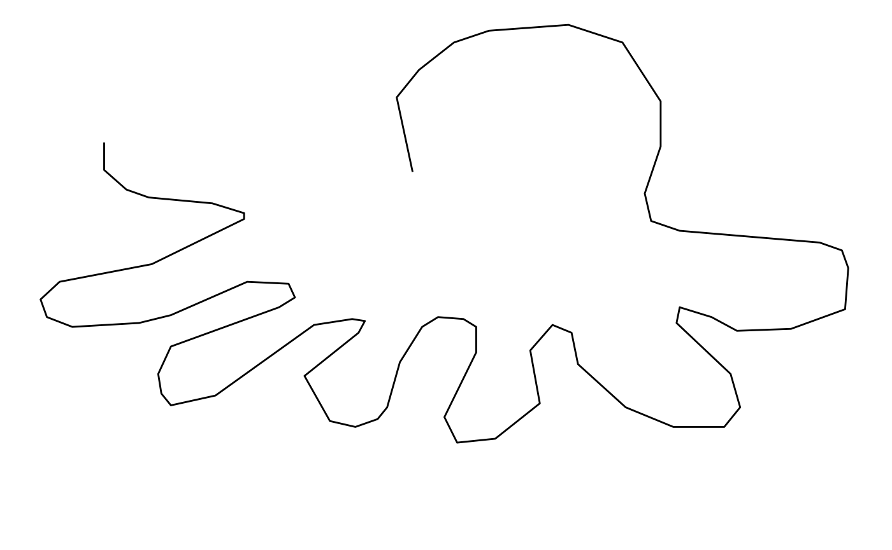

The quickdraw package allows you to download and retrieve the dataset categories from the quickdraw dataset:
Data files are cached and retrieved using the qd_read function:
library(quickdraw)
octopus <- qd_read("octopus")
#> QuickDraw file: octopus.ndjson has been downloaded already!
octopus
#> # A tibble: 150,152 x 6
#> word countrycode timestamp recognized key_id drawing
#> <chr> <chr> <chr> <lgl> <chr> <list>
#> 1 octopus CZ 2017-03-05 10:52:2… TRUE 4599994839… <list [1…
#> 2 octopus CH 2017-01-23 21:23:0… TRUE 6746256573… <list [1…
#> 3 octopus DE 2017-03-20 10:26:0… TRUE 5419213730… <list [9…
#> 4 octopus SK 2017-03-03 21:40:1… TRUE 5953290716… <list [1…
#> 5 octopus DE 2017-01-27 20:01:5… TRUE 5005193466… <list [2…
#> 6 octopus DE 2017-03-02 10:24:1… TRUE 6724261806… <list [7…
#> 7 octopus BR 2017-01-26 17:49:0… TRUE 5064235442… <list [1…
#> 8 octopus RU 2017-03-23 11:21:5… TRUE 4876295202… <list [1…
#> 9 octopus US 2017-03-03 16:00:5… TRUE 6670279134… <list [1…
#> 10 octopus DE 2017-01-27 20:54:1… TRUE 6018386049… <list [1…
#> # … with 150,142 more rowsThe last column is a nested list which is a drawing made, it consists of the x,y coordinates for each stroke:
You can draw a pic with qd_tidy and qd_draw

You could also animate multiple drawings with qd_draw